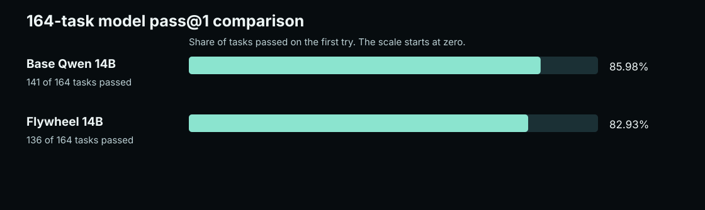

Keep proposal and acceptance separate.
A selected model proposes an answer. A separately defined check accepts or rejects it, and the run records the result. Current public evidence does not establish market superiority or feature uniqueness across competing harnesses.
Bring your keys, or bring your weights.
The verified-inference loop.
Propose cheap with a local model. Dispose with an external check that can fail. Carry a re-checkable receipt. What passes accumulates; the next identical ask is free, re-checked before it is served.
Four implemented parts of the current surface.
What the current evidence measures.
The named market baseline remains NOT_MEASURED. These figures publish the results that do exist, including negative and incomplete outcomes.

Run it now.
Flywheel v0.3.10 is the current consolidated platform release. Install the zero-runtime-dependency Python package for the supported command surface, or use the Windows app with the engine bundled. Provider keys live in the OS keychain and are shown as presence only, never as values.
shell flywheel up
The installer is built from the version tag by a public pipeline, and its hash is published beside it. Verify the copy you downloaded:
- Version
- v0.3.10, August 2026
- SHA-256
- b47ad411394ef89c4bb9872b92b57bee28eb378ccb4388ea6aab8d6958b853d2
The honest caveat.
The installer is not code-signed yet, so Windows SmartScreen will warn on first run. The hash above is the substitute: it proves the file you hold is the file the pipeline built. Signing is planned; until then the receipt does the signature's job, checked by you instead of trusted by default.
The core package has zero runtime dependencies and uses the Python standard library. Route online with your keys, or run fully offline against local weights.
Then open the surface in your browser. One origin, one page, same-origin JSON routes.
Benchmarks, with the interval.
The model is Flywheel-Local-Coder-14B, a trained artifact with a full provenance chain, just under 9 GB at 4-bit. Hard set, ten tasks, every arm carrying its Wilson 95% interval and 100% receipt reproducibility.
| Arm | Result | Wilson 95% CI | Receipts |
|---|---|---|---|
| single-shot | 8 / 10 (80%) | [0.490, 0.943] | 100% |
| verified inference | 9 / 10 (90%) | [0.596, 0.982] | 100% |
| best-of-4 | 9 / 10 (90%) | [0.596, 0.982] | 100% |
| single + oracle | 8 / 10 (80%) | [0.490, 0.943] | 100% |
The honest null.
Verified inference beats single-shot by +0.100 here. The 95% interval on that difference is [-0.236, +0.420], which includes zero, and plain best-of-4 sampling ties it. So we do not claim a capability uplift.
What we do claim, and can measure: 100% receipt reproducibility, every accepted answer re-checks; pass parity with the models it routes to; availability on your own schedule, from weights you hold; and local cost. A tool that refuses to overclaim is a tool whose other claims you can trust.
Evidence: the running app serves the receipt at /artifacts/flywheel-local-coder-14b-benchmark-ci.json, re-checkable offline. The number moves the day the evidence does, not before.
Spec, at a glance.
- Desktop app
- Windows x64 installer, engine bundled, no Python required. v0.3.10.
- Dependencies
- None. Python standard library only.
- Network
- Your choice per call: route online with hosted-provider keys, or run fully offline against local weights.
- Entry point
- flywheel up
- Surface
- One origin, one browser page, same-origin JSON routes.
- Local model
- Flywheel-Local-Coder-14B, ~9 GB 4-bit, GPU optional.
- Accept authority
- An external check. No learned model on the accept path.
- Receipts
- Content-addressed, re-checkable offline, on every accepted answer.
Related retro products.
These products are maintained independently. Their product pages carry their definitions and evidence records.
What remains stable.
Models, routes, and external checks can change without changing the recorded acceptance criteria or the content-addressed run history. That separation lets a reviewer compare later runs against the same declared task and evidence contract.
Run it: github.com/HarperZ9/flywheel · the engine room · the workshop